<!DOCTYPE lake>
<p data-lake-id="u9bdc57bd" id="u9bdc57bd" style="text-align: center"><span data-lake-id="udf3bd951" id="udf3bd951">仿真图</span></p><p data-lake-id="u87ec1be8" id="u87ec1be8" style="text-align: center"></p><p data-lake-id="u9592d620" id="u9592d620" style="text-align: center">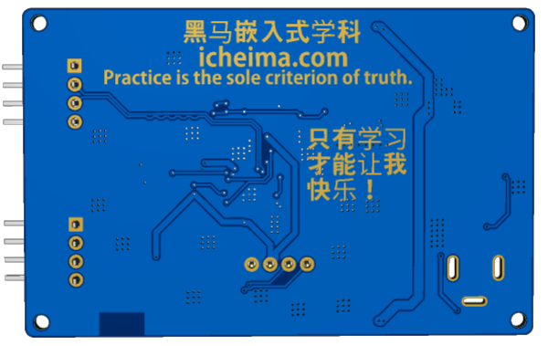</p><p data-lake-id="u7c5dbd72" id="u7c5dbd72" style="text-align: center"><span data-lake-id="ua9b78e48" id="ua9b78e48">实物图</span></p><p data-lake-id="u29423cd0" id="u29423cd0" style="text-align: center"><br/></p><p data-lake-id="u5b4fe34c" id="u5b4fe34c" style="text-align: center">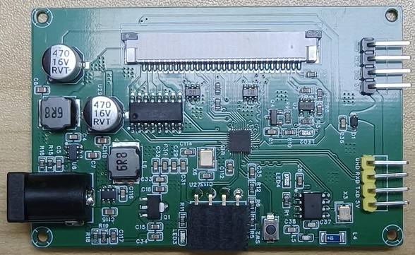</p><p data-lake-id="uf42be3e3" id="uf42be3e3" style="text-align: center">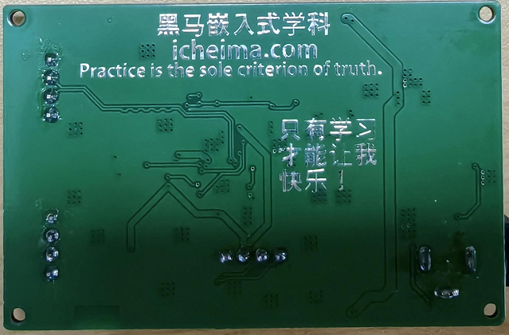</p><h2 data-lake-id="K7Jun" data-lake-index-type="2" id="K7Jun"><span data-lake-id="u5a983b2f" id="u5a983b2f">打印头</span></h2><p data-lake-id="u73a6ac27" id="u73a6ac27"><span data-lake-id="u7c7964d0" id="u7c7964d0">打印头我们选择市面上常见的打印头</span></p><p data-lake-id="u43c55a8b" id="u43c55a8b" style="text-align: center">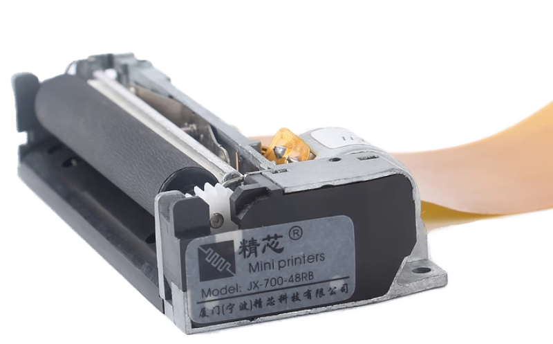</p><p data-lake-id="u4872973a" id="u4872973a" style="text-align: center"><a data-lake-id="ufc92da82" href="https://item.taobao.com/item.htm?ft=t&amp;id=992938879800" id="ufc92da82" rel="noopener noreferrer" target="_blank"><span data-lake-id="ue1ab1497" id="ue1ab1497">https://item.taobao.com/item.htm?ft=t&amp;id=992938879800</span></a></p><p data-lake-id="ue16cc4ae" id="ue16cc4ae"><span data-lake-id="u192bec36" id="u192bec36">参考开源资料，我们可以画出打印头的电路图</span></p><p data-lake-id="udae67d5e" id="udae67d5e" style="text-align: center">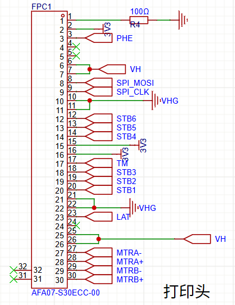</p><h2 data-lake-id="Y7mNW" data-lake-index-type="2" id="Y7mNW"><span data-lake-id="ud3fa36d5" id="ud3fa36d5">温度检测电路</span></h2><p data-lake-id="u2a181b70" id="u2a181b70" style="text-align: center">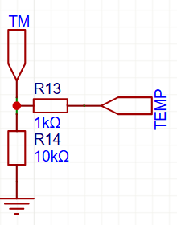</p><p data-lake-id="u3bc05807" id="u3bc05807"><br/></p><h2 data-lake-id="VzcRl" data-lake-index-type="2" id="VzcRl"><span data-lake-id="u3dcb879f" id="u3dcb879f">步进电机驱动电路</span></h2><p data-lake-id="u02db9cc4" id="u02db9cc4"><br/></p><p data-lake-id="u3c10e965" id="u3c10e965" style="text-align: center">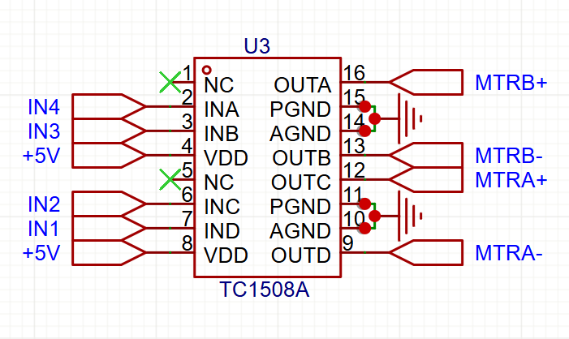</p><p data-lake-id="u40b079b9" id="u40b079b9"><br/></p><h2 data-lake-id="Shlw3" data-lake-index-type="2" id="Shlw3"><span data-lake-id="u14439fa3" id="u14439fa3">缺纸检测</span></h2><p data-lake-id="uec7a22c8" id="uec7a22c8"><br/></p><p data-lake-id="u723ac759" id="u723ac759" style="text-align: center">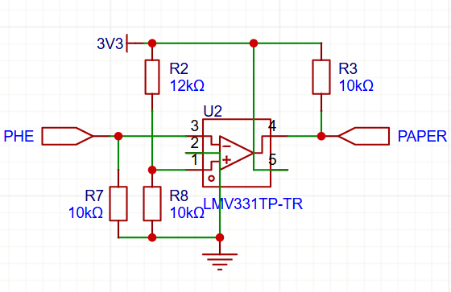</p><p data-lake-id="ud24a9075" id="ud24a9075"><br/></p><h2 data-lake-id="slNOT" data-lake-index-type="2" id="slNOT"><span data-lake-id="ue64a79df" id="ue64a79df">加热头供电</span></h2><p data-lake-id="u51b5f503" id="u51b5f503" style="text-align: center">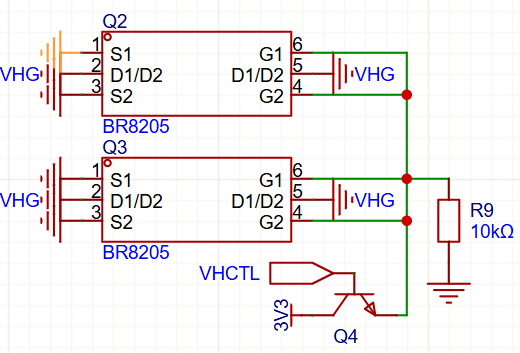</p><p data-lake-id="u9b7ce067" id="u9b7ce067"><br/></p><h2 data-lake-id="tuI9W" data-lake-index-type="2" id="tuI9W"><span data-lake-id="ucda1168d" id="ucda1168d">供电电源</span></h2><p data-lake-id="u3784f654" id="u3784f654" style="text-align: center">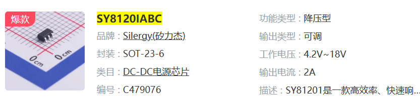</p><h3 data-lake-id="mGIyL" data-lake-index-type="2" id="mGIyL"><span data-lake-id="u296a719f" id="u296a719f">12V转8.4</span></h3><p data-lake-id="u61dd792f" id="u61dd792f" style="text-align: center">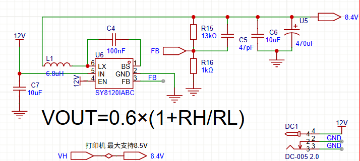</p><h3 data-lake-id="CnjNs" data-lake-index-type="2" id="CnjNs"><span data-lake-id="u3ecca46d" id="u3ecca46d">12V转5v</span></h3><p data-lake-id="ufb8e7d90" id="ufb8e7d90" style="text-align: center">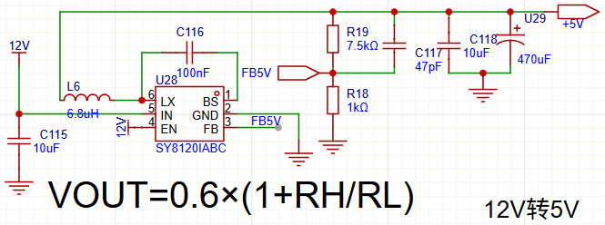</p><h3 data-lake-id="TecfP" data-lake-index-type="2" id="TecfP"><span data-lake-id="u220fde74" id="u220fde74">布线参考</span></h3><p data-lake-id="uca55e4c3" id="uca55e4c3" style="text-align: center">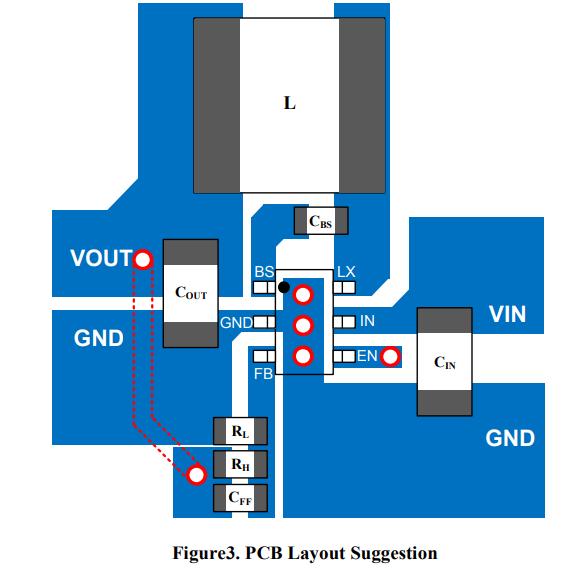</p><p data-lake-id="ued697241" id="ued697241"><br/></p><h2 data-lake-id="lwzZA" data-lake-index-type="2" id="lwzZA"><span data-lake-id="u697d5166" id="u697d5166">主控电路</span></h2><h3 data-lake-id="umgYC" data-lake-index-type="2" id="umgYC"><span data-lake-id="u165a3ee2" id="u165a3ee2">主控外围电路</span></h3><p data-lake-id="uc9937fad" id="uc9937fad" style="text-align: center">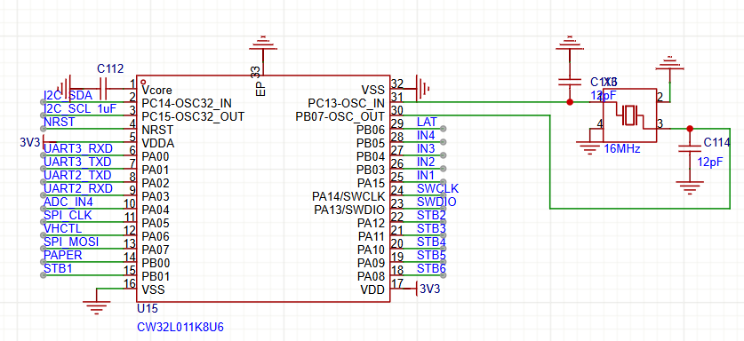</p><h3 data-lake-id="Zzk52" data-lake-index-type="2" id="Zzk52"><span data-lake-id="ue1d79e50" id="ue1d79e50">复位电路</span></h3><p data-lake-id="u64842f17" id="u64842f17" style="text-align: center">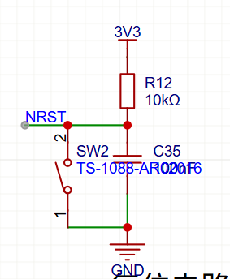</p>